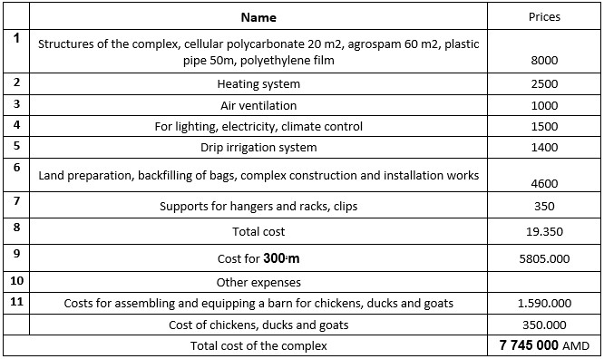
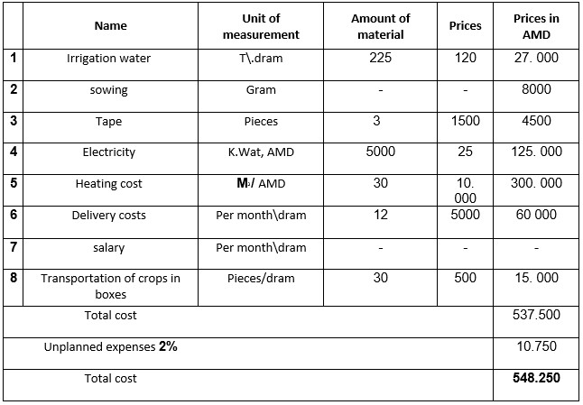

1. The main goals of the project.
After forty-four days of the war, due to the loss of territorial integrity in Artsakh, problems arose with agriculture. The most important factor in life was the construction of small greenhouse complexes. The project is presented to your attention. With an area of 300 sq.m. the construction of which will provide jobs for about 7 people and will affect the progression of food production, since we will purchase everything necessary for construction from Artsakh and Armenia.
Already in the finished complex 2 people can work. The complex can provide eco products, vegetables, meat, eggs, milk.
2. Description of the complex and purpose of use.
The complex consists of parallel tunnel-type greenhouses 5m wide, 2.8m high, 20m long, behind which there is a small farm 2m wide, 2.8m high and 15m long. The front and back parts of the complex are covered with 8mm cellular polycarbonate. The boards are also covered with cellular polycarbonates 1m high. The remaining parts are covered by agrospam. And you can also cover the top with plastic wrap in the winter.
A heating device is installed with the rear structure. Nests are being built for 20 chickens, 25 ducks and a barn is constructed for 2 goats. It is noteworthy that the gas exhaled by animals contributes to the photosynthesis of plants, and manure is used as fertilizer. Surplus vegetable crops grown in greenhouses are used as food for the birds and animals, which makes up about 40% of their food. This type of complex will allow the user to additionally produce eggs, poultry meat, goat meat and milk at a relatively low cost.
The complex is heated by a developed device that runs on wood or gas, heated air is distributed through special pipes throughout the complex and heats it up. In 3 greenhouses of the complex with 90 m2., you can grow any vegetables and herbs.
The proposed new method of cultivation allows you to build a greenhouse on any soil cover, which is an important circumstance. The program also includes training for the staff of the complex.
3․ The average calculation of the cost of the complex for 1 m2. AMD
Costs

4. Production program.
The total area of the complex is 300 m2, of which 270 m2 will be used for growing vegetables and herbs, and 30 m2 will be used for birds' and goats' nests. And a heater. In the first year, you can grow beans, tomatoes, cucumbers and greens.
By growing 500 bean bushes, you can get about 300 kg of green beans, the average annual price of green beans is 900 AMD, so we will get 150,000 AMD.
If you grow 200 tomato bushes, you can get 1100 kg of tomatoes per year, from which we will receive 900,000 drams.
If you grow 100 cucumber bushes, you can get 1000 kg of cucumbers, the average annual price per kilogram is 300 drams, you will receive 300,000 drams from its sale.
Growing greens on 70 m2 will result in about 1050 bunches of greens, the average price of one bunch of greens is 250 drams, from harvesting of which we will get 262.500 drams.
The total amount received from the sale of vegetables and herbs will be 1612500 drams.
20 hens lay 3,600 eggs a year and if you sell 80 drams each, you get 288,000 drams
After keeping 25 ducks for four months, you can sell one duck for 5000 AMD, after a year you can keep and sell 65 ducks, which will give you 325000 AMD
In the first year, one kid will be born from goats, and the owner of the complex will receive goat milk, which is about 80,000 drams.
The total income is 2.305.500 drams annually.
4. Production program.
Costs

Total cost of the Project 7 745 000 AMD + 548.250 AMD = 8 293 250 AMD
Costs for growing vegetables and herbs - 548.250 AMD.
The cost of buying chickens, ducks, goats in the first year of the project is 350.000 AMD.
Costs for the purchase of feed - 25.000 AMD.
The expected result from the complex in a year is 2 305 500 – 548 250 = 1757250 AMD.